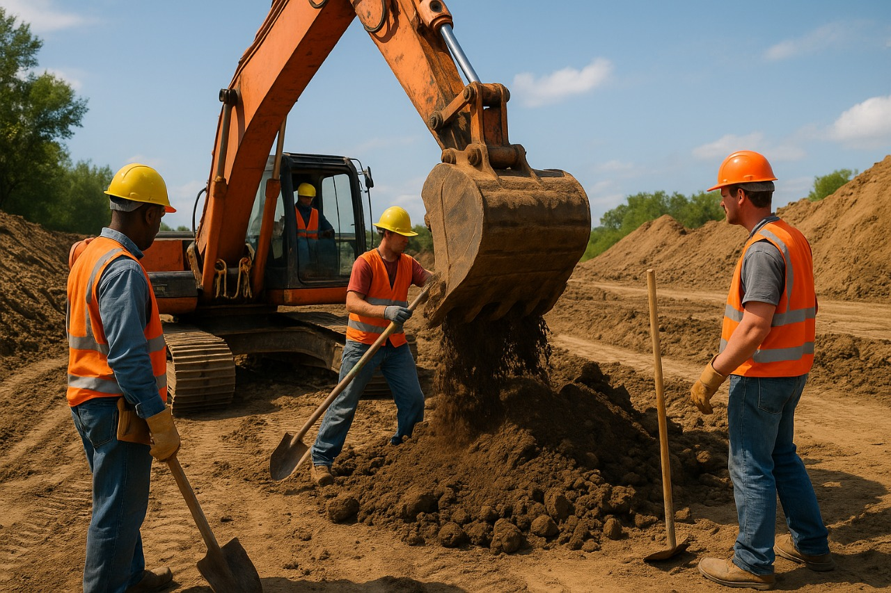
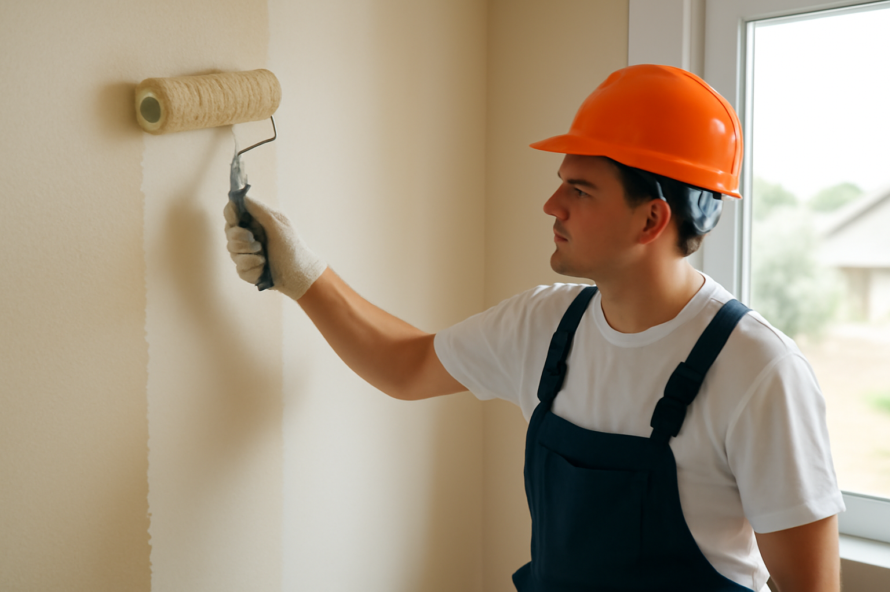

Realizamos excavaciones, nivelaciones y rellenos con maquinaria pesada y personal capacitado.
Expertos en obras de concreto estructural: fundaciones, losas y pavimentos con precisión y calidad.
Aplicación de pintura para interiores y exteriores con acabados duraderos y limpios.
